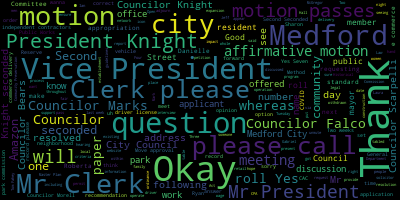
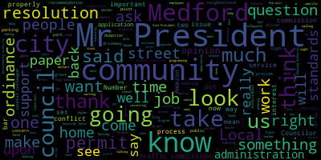
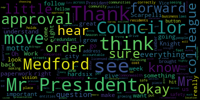

[Caraviello]: The fifth regular meeting of the Medford City Council, February 2nd, 2021. Mr. Clerk, please call the roll.
[Hurtubise]: Councilor Bears. Present. Councilor Falco. Present. Vice President Knight. Present. Councilor Marks. Present. Councilor Morell. Present. Councilor Scarpelli. Present. President Caraviello.
[Caraviello]: Present. Assembly affirmative. Please rise and salute the flag. I pledge allegiance to the flag of the United States of America, and to the Republic for which it stands, one nation, under God, indivisible, with liberty and justice for all. All right. Pursuant to Governor Baker's March 12, 2020 order suspending certain provisions of the Open Meeting Law, General Law Chapter 30A, Section 18, and the Governor's March 15, 2020 order imposing the strict limitation on the number of people that may gather in one place, this meeting of the Medford City Council will be conducted via remote participation to the greatest extent possible. Specific information and general guidelines for remote participation by members of the public and your parties with the right and or requirements to attend this meeting can be found on the City of Medford website at www.medfordmass.org. With this meeting, members of the public who wish to listen or watch the meeting may do so by accessing the meeting link contained herein. No in-person attendance of members of the public will be permitted, but every effort will be made to ensure that the public can adequately access the proceedings in real time via technological means. In the event that we are unable to do so, despite best efforts, we will post on the city of Medford or Method community media website, an audio or video recording transcript, a rather comprehensive record of the proceedings as soon as possible after the meeting. Okay. Motions, orders and resolutions. 21-023 offered by Councilor Marks be it resolved that the deadline discount program be discussed. Councilor Marks.
[Marks]: Thank you, Mr. President. I am still waiting for additional information on this subject and would ask that it be tabled.
[Caraviello]: Second. Thank you. On the motion by Councilor Marks, seconded by Councilor Knight. Mr. Clerk, please call the roll.
[Hurtubise]: Councilor Bears. Yes. Councilor Falco. Yes. Vice President Knight. Yes. Councilor Marks. Yes. Councilor Morell. Yes. Councilor Scarpelli. Yes. President Caraviello.
[Caraviello]: Yes, affirmative motion passes. 21038 offered by Vice President Knight and Councilor Scarpelli. Resolution urging fair and full employment opportunity at Amazon. Whereas Amazon has targeted the city of Medford expansion of its e-commerce network, and whereas COVID-19 has had a devastating impact on the health, safety, and well-being of the residents of the city of Medford. And whereas the preventative measures put in place to combat COVID-19 by state and local guidelines to prevent the spread and contain the transmission of the coronavirus have had a devastating economic impact on local retail establishments in the city of Medfordians have changed the retail options for the residents of the city of Medfordians, whereas preventative measures put in place to combat COVID-19, and whereas existing retail and e-commerce delivery networks currently operate in the city of Medford and set community standards for every family with sustaining wages, benefits, including but not limited to quality health insurance and secure retirement. And whereas these retail and e-commerce delivery options coexist in Medford's diverse neighborhoods while adding value to the fabric of the community offering good careers for Medford residents to provide for their families. And whereas existing e-commerce delivery options have aptly served the residents of the city of Medford throughout the COVID-19 pandemic, while maintaining the highest standards for its essential workforce. And whereas Amazon, which is not conformed to area standards for wages, benefits, and working condition, has targeted the city of Medford area for expansion of its e-commerce operations. Now, be it resolved, that the Medford City Council, hereby assembled, urges Amazon to meet and confer with the Medford community, included but not limited to representatives from the International Brotherhood of Teamsters Local 25, locally impacted neighborhood groups, local residents, and other interested parties to discuss how Amazon can expand the delivery options, warehouses, and fulfillment centers in a way that is beneficial to the city of Medford and its residents while guaranteeing sustainable growth for the city in helping to ensure that fair and equitable employment standards are maintained for all e-commerce delivery networks throughout the city of Medford. And it be further resolved that prior to any expansion into the city of Medford, Amazon commits to and presents sufficient evidence to the Medford City Council that its operation meets or exceeds current standards set by existing e-commerce delivery networks. This commitment would include that all delivery drivers be direct employees of Amazon and not independent contractors. Amazon will ensure that all employee delivery drivers pass the most rigorous background checks, including COVID checks and are compliant with all federal DOT drug testing guidelines. Amazon will only hire competent and safe delivery drivers that will maintain the utmost professional conduct in their day-to-day operation in the neighborhoods of the city of Medford. Councilor Knight.
[Knight]: Mr. President, thank you very much. I appreciate you bearing with me and going through all of that. I apologize for the length of my resolution. However, I think it's a very important issue, and I think it's very important that we take a look at this. It's evident that during government shutdown, Mr. President, we've all become more and more reliant upon e-commerce options. But while e-commerce certainly has its many benefits, the adverse impacts that it's had during the pandemic upon Main Street USA is something many of the businesses here in Medford are never going to recover from. And the expansion of Amazon in particular is negatively impacting the well-being of our community and our local economy. Mr. President, there were just a number of reported concerns that Amazon's lowering the bar concerning safety standards, misclassifying of employees, failing to pay a living wage, provide health insurance, or secure retirement prospects for their employees. And quite frankly, our community's lost jobs to this mega corporation. And as one of the most profitable corporations in the world, Amazon has a social responsibility to its consumers. the environment of the communities that they service, and most importantly, its workers, to replace jobs lost in our community during this pandemic with opportunities that meet our current community standards and raise the bar, not lower it. And that's not what we're receiving right now, Mr. President. The Medford City Council's called upon Amazon to appear before us in the past to address the concerns that we have regarding their operational practices, the way their drivers park and drive down the street, the way their drivers aren't properly quarry checked, the size of the vehicles that they're distributing across our neighborhoods, Mr. President, much to the chagrin of many of the residents and the quality of life of us here in Medford. So with that being said, Mr. President, I ask that my council colleagues support this resolution in calling Amazon to the carpet to address a number of concerns that we have here in the community and raising standards for living people and for working people here in the community, Mr. President. So I'd ask my council colleagues to support the resolution. Thank you very much.
[Scarpelli]: Thank you. Councilor Scarpelli. Thank you, Mr. President. I thank my fellow colleague and Vice President Knight. I think, not to be redundant, but you hit that right on the button. I think that this is something that we brought forward, something that we look to address in my number one vision with this is the safety and having the responsibility that we put on other entities that use Medford as a place of business. And I think that it's a very important piece of this puzzle. And as they grow and move forward, I think it's important that we meet with them and make sure they understand where we want them to be and how the city of Medford holds them accountable. And I think that you're seeing this across the Commonwealth, there are other communities that are focusing on you know, the feet to the fire, per se, to Amazon. And as they're growing, it's great. You'd like to see companies grow. But as they come into our community, we want to make sure what cost and making sure that they are licensed correctly, that they are quarried. And as they drive our streets and enter our residents that they're people that are safe and follow our laws. So I appreciate Councilor Knight's thoroughness with this presentation and move approval.
[Caraviello]: Thank you, Councilor Scarpelli. Councilor Morell.
[Morell]: Thank you, Mr. President. Yeah, I thank Councilors Knight and Scarpelli for bringing this forward. I couldn't agree more that Amazon is really driving a race to the bottom as far as wages and benefits, while also really damaging local businesses. And this also says nothing of their incentivization and really practice of penalties that causes drivers in the area to drive erratically, to stop in the middle of the street, to park against traffic, and really disturb safety in the area. So I thank them for bringing this forward, and I look forward to supporting this paper tonight.
[Bears]: Thank you, Council Member. Thank you, Mr. President. Thank you, Vice President Knight for bringing this forward, and I agree with my fellow Councilors. It's imperative that Amazon is providing good union jobs in our community, especially when they're disrupting so many of our small businesses. And you know, really, as Councilor Morell said, and Councilor Knight lowering the bar. So I'm strongly supportive of this, and I do think just a special point needs to be made that their labor practices are really devious, and they're tracking people down to the second, and these workers deserve better. They deserve a union and they deserve a living wage. So I hope that we can help move this forward as a council. Thank you.
[Caraviello]: Thank you, Councilor Bears.
[Knight]: Any further questions. One more thing, Mr. President, I think it's very important to point out that, you know, when we talk about community standards and what we expect here in Medford for employers to do and what it takes to be a good employer, or what it takes to support the rights of workers in the community, we have to also look at the fact that this resolution does speak to asking that Local 25 be involved. And when you look at local 25 the teamsters union and the work they've done related to individuals in the trucking industry and professionals in the trucking industry. When we talk about community standards, local 25 help set that bar, Mr. President, when it comes down to a fair living wage when it comes down to. providing health benefits and providing secure retirement prospects for the community, we have to look at the organizations that are in this community that provide people with jobs. And Local 25 is a large employer in the city of Medford. We look at the work that Sean O'Brien does as president of Local 25, a Medford resident, a Medford high school grad, someone that maintains pride in his community, someone that has the blue and white running through his veins. You know, We have to respect the work that these individuals have done for Medford in the past. And that's why I asked Local 25 to be involved in this process as we go forward, Mr. President. I thank President O'Brien for his leadership in the region. And when I say the region, I don't mean eastern Massachusetts. Eastern United States of America, because he's really helping set the tone and set the bar and raise standards across the country. So I want to take an opportunity to also thank Sean O'Brien and the work that he's doing on behalf of the residents in Medford and also across America. Thank you very much to Sean.
[Caraviello]: Thank you. And if I if I could say something. I want to thank Councilor Knight, Vice President Knight, and Councilor Scott Blake for bringing this forward. These men and women who work for Amazon, I know they classify them as independent contractors. They're not. Because independent contractors can set their own time. Amazon is a very demanding company, and they set the standard of how these men and women have to work, their hours, and their pay. So they're not independent contractors. All Amazon is doing is avoiding paying them workman's comp, and insurance, and a decent living wage, and some type of pension. So again, I also support this, not only for what they do in Medford, but for all the men and women who work for this company throughout the country, not just in Medford. The same thing goes for the Uber and the Lyft guys. Those guys, they're not independent contractors when you're dictated to how you have to work. So again, I thank my councilors for bringing this up and I will be in support of this. Mr. President.
[Falco]: Councilor Falco. Thank you, Mr. President. I wanna thank my council colleagues as well. Councilor Knight, Councilor Scarpelli for bringing this forward. I think Councilor Knight, you hit it on the head in one of the last sentences you made. It's all about raising the bar and I think that this does that and I'll support this 100% and I move approval.
[Caraviello]: Thank you, Councilor Falco. Any further discussion on this? President. Councilor Marks.
[Marks]: Just if we could, what are the next steps regarding this?
[Caraviello]: We've asked them to appear before us to discuss the issues that have been brought up by the council. So I'm sure that the clerk will send this out via registered mail so we know that someone has received it. and have them appear before us.
[Marks]: Right. So if they fail to appear in the past, one would think they're probably not gonna appear again. So what are the next steps by the city council? I support this, but I wanna support something that has some tea to it and something that we can act upon. And I'm not quite sure that we're there with this. I know the intent, and I support the intent, but I'd like to see some other steps. Waiting for them to come to a meeting, which may never happen, to me is not a next step. But like I said, I am supportive.
[Knight]: If I may, Mr. President? Vice President Knight. This is just one piece in a regional approach that Local 25 is taking and working with the community stakeholders to raise the bar across the region where Amazon is looking to expand. So the next steps would be that, you know, we're going to get community support from communities surrounding Medford. Somerville had a resolution on very recently. The city of Boston has as well. The next step, and what my intention would be, would be to coordinate with representatives, the sponsors of those pieces of legislation, as well as the legislative arm of Local 25 to begin putting pressure on a dialogue with him. So that's the next steps that I'd like to take, Mr. President, and the next steps that have been coordinated through the political arm of Local 25.
[Marks]: Thank you. So, Mr. President, are we aware of any particular pieces of legislation that we can look at? That would be helpful.
[Caraviello]: Okay, we'll look into that and see if we can find anything. We can also refer this to our solicitor also, RKP Law, for their opinion on the next step.
[Knight]: And I mean some of the things that we can look at Mr. President would be establishing no truck zones, working with the Amazon to be sure that they understand what on resident access only means not using streets or cutthroats then also those other community standards issues that we're discussing where you know we want. The delivery driver that's coming to Medford is also going to Malden and Winchester and Melrose. So we want to make sure that person's properly quarry checked, properly licensed, and properly trained in the safety standards that are acceptable to us in the region. And the only way that we're going to be able to do that is by coordinating locally. And then I'm taking the next steps that the stakeholders are able to establish for what they think will work in their individual community and also regionally.
[Caraviello]: Thank you, Vice President Knight. Any further questions on this? I don't see any. Laura Ruma. If we can unmute Laura. Mr. Clerk, if we can unmute, thank you. I got it, thank you.
[Ruma]: Name and address of the record, please. Laura Ruma, 149 Burgett Ave in Medford. I would just like to mention to the council that we should be very careful with our language here because Amazon actually does bring jobs to the community, as we all know, over on the river. lots of high paying computer programming jobs. So like when we do talk about Amazon, I think it's important to say that there's obviously many branches of Amazon. What issues you're addressing specifically are the delivery drivers and I believe the warehouse of which there's not one in Medford, but could be nearby or could be as we expand. So then there's three businesses to Amazon, right? And then there's the jobs that we are happy to have them bring to our community. So just a slight change in the way that we approach this company, who actually does employ a number of people in the area, whether you are a contractor or not. And the other issue, of course, is I understand the union is very aggressive to this. I just wanna make sure this is the best thing for Medford now. Is this something that has to be agreed to tonight? Is this an urgent matter? Thank you.
[Caraviello]: Thank you, Laura. Mr. President. Councilor Morell.
[Morell]: Thank you, Mr. President. I think Laurel brings up a good point in just highlighting how egregious some of Amazon's practices are and that they do seem to understand livable wages and benefits, but only for one tier of their employees and the way that they treat the rest of their employees is truly deplorable. And I just ask, you know, I think we're seeking that all of their employees be treated with the same care they treat those who work in the offices within their company. Thank you.
[Caraviello]: I think Vice President Knight is asking mostly about the independent contractors that are in there. I think that's really the highlight of it. And I am aware that they do have an office over in Rivers Edge and Cabot Road, and they do employ people there in that office there. So I thank you.
[Knight]: right for the discussion. Council President Gabriela I understand that and again, like I said, the jobs that were replacing in the community should not be lowering the bar that should be raising the bar so we're taking jobs away from truck drivers we should be bringing jobs back in truck drivers that met those same community standards. You know, high-tech jobs are high-tech jobs. When we're talking about blue-collar working people that need to get paid a living wage in order to survive in this community, in order to be able to live in this community, in order to have discretionary dollars that they can spend in the local economy here so that we can all rise together, I think it's very important that we focus on those jobs as well. I thank my council colleague, Councilor Scarpelli, as a co-sponsor.
[Caraviello]: Thank you. On the motion by Councilor Scarpelli, seconded by Councilor Knight. Mr. Clerk, please call the roll.
[Hurtubise]: Councilor Bears? Yes. Councilor Falco? Yes. Vice President Knight? Yes. Councilor Marks? Yes. Councilor Morell? Yes. Councilor Scarpelli? Yes. President Caraviello?
[Caraviello]: Yes. Seven in affirmative, motion passes. 21039 offered by Councilor Bears, be it resolved that the Medford City Council and have the Department of Public Works repaint the crosswalks at Winthrop Street and West Street and crossing Winthrop Street just past South Street in the interest of public safety. Councilor Bears.
[Bears]: Thank you, Mr. President. This resolution is put forward, one, because just you can see that the crosswalks there are fading a little bit, but also some resident concerns in the area that the changes at South Street and Main Street might lead to additional car traffic on Winthrop Street, and it's already difficult to cross the street there for pedestrians, and there's a concern that that might get worse. So the intent of this resolution is to make sure the crosswalks are repainted and also to explore the city administration to explore any additional signage or other pedestrian safety measures at this location, just to make sure that residents can cross the street safely. Thank you.
[Knight]: Thank you for that point. Vice President night for about the last seven weeks now I've been working with the city traffic set the city's traffic engineer to get a couple of signs removed on the corner of South Street, and went for up and these signs are located on that recent complete streets project that was performed. It's a cut out or a bump out right in front of the first house on the corner. And the city in the, their approach to trying to mitigate traffic along South Street, put two signs up one that says 93 and the other one that says 16 right on the corner of South Street and Winthrop Street, probably arm's length distance from the If you were standing on the front porch of the gentleman's home that lives on the corner, he could reach off the front porch and touch the science Mr. President, I've made multiple attempts to ask that these signs be relocated or removed in my conversations with the city traffic engineer. He said it's going to happen. I'd like to see it happen but in an inordinate amount of time has passed Mr. President. for these signs to still remain in place. So I'd just like to ask Councilor Bears, if he doesn't mind that I offer a B paper, requesting that these signs be relocated as agreed to by the traffic engineer as well.
[Bears]: Absolutely, and they're no longer relevant, correct? True, he can't, with the change, so. Yeah.
[Caraviello]: Thank you, Vice President. Any further questions?
[Castagnetti]: Move approval as amended.
[Caraviello]: On to be paper as often as concert by concert night seconded by Second by councilor second by council Scarpelli. Mr. Clerk, please call the roll
[Hurtubise]: Councilor Bears.
[Caraviello]: Yes.
[Hurtubise]: Councilor Falco. Yes. Vice President Knight. Yes. Councilor Marks. Yes. Councilor Morell. Yes. Councilor Scarpelli. Yes. President Caraviello.
[Caraviello]: Yes, seven in the affirmative motion passes. On the original paper offered by Councilor Bears, seconded by. Second. Seconded by Councilor Falco. Mr. Clerk, please call the roll.
[Hurtubise]: Councilor Bears? Yes. Councilor Falco? Yes. Vice President Knight? Yes. Councilor Marks? Yes. Thank you. Councilor Morell? Yes. Councilor Scarpelli? Yes. President Caraviello?
[Caraviello]: Yes, seven in the affirmative, motion passes. 21040 offered by President Carrie Villalo, be it resolved that the Medford City Council send its deepest and sincere condolences to the family of Tom Fahey on his recent passing. His presence in our community will be missed. Tom Fahey's been another icon in our community. Like Councilor Scarpelli said last week, these icons are passing, and no one is filling their shoes. Tom Fahey was a fixture at City Hall for many, many years with the voting office. And when I was the first candidate that came in, he was there all the time. And he was still there even after he wasn't on there anymore. Good man. He served our country in World War II and Korean War. He was a member of the Medford Kiwanis and good community member. And again, like I said, another icon in our community has passed and condolences to his family. And I ask that this meeting be held in his honor. President. Councilor Marks.
[Marks]: Thank you, Mr. President. And thank you for putting this on the agenda tonight. You couldn't meet a kinder, gentler man. You know, when I first got elected so many years ago, he was one of the first people that I met at City Hall. And in his capacity as the registrar of voters, you know, he was a very fair man, Tom, if you knew him. You know, he took his job very seriously, although he was one that you could talk to. He was old fashioned in that way, that he'd be willing to lend an ear, lend advice, and he always kept conversations to himself. and just a true family man and someone that will be sorely missed at City Hall, Mr. President. And I, too, want to send out my deepest condolence to his family and friends, Mr. President.
[Caraviello]: Thank you. Clerk Kirby, did you want to speak?
[Hurtubise]: I would love to, Mr. President, if that's appropriate. I just, I wanted to extend my condolences to Faye's family as well. You know, before I started as clerk, Tom was incredible to me personally, getting me up to speed on all the election, all the election work that needed to be done. in fact, for the first year and a half that I was clerk, he was in the office, in the registrar's or voter's office just about every Wednesday meeting with the team in there. And he was always very good with his time and with his energy and with his passion for the city. And he was a good man. He'll be sorely missed. And I just want to extend my condolences to his family. Thank you.
[Falco]: Councilor Falco. Thank you, President Caraviello. I'd also like to send my condolences to the Fahey family. Mr. Fahey was, like everyone has already said, I mean, very committed to this city, committed to this country as a veteran, and always volunteered, always friendly, very nice to talk to, love to talk to him about city politics and about elections. That was his wheelhouse, and he loved that, and he loved talking about it. And he was also, The picture down at St. Francis, you'd see him at mass every Sunday, and he was just an all around great person who was always giving back to the community. So I'd like to offer my condolences to the family.
[Caraviello]: Thank you. Thank you. Any further questions? Any further discussion? Okay. Move approval, Mr. President, as amended. Okay. The motion by President Caraviello, seconded by Councilor Knight. Mr. Clerk, please call the roll.
[Hurtubise]: Councilor Bears? Yes. Councilor Falco? Yes. Vice President Knight? Vice President Knight's nodding his head, but I can't hear him. Councilor Marks? Yes. Councilor Morell? Yes. Councilor Scarpelli? Yes. President Caraviello?
[Caraviello]: Yes. Seven in the affirmative, motion passes. Please rise for a moment of silence. Thank you. 2-1-0-4-1, offered by Vice President Knight. Whereas Council Paper 20-426 establishing the Cannabis Advisory Committee Ordinance was passed on September 22, 2020, and whereas Article 1 of this ordinance reads, Within 90 days following the adoption of this, requires that the Cannabis Advisory Commission shall establish a scoring system and will review and score applicants seeking to locate a marijuana establishment in the city of Medford. Applications for all applicants shall be open no later than 120 days following the adoption of this order. And whereas on Monday, December 21st, 2020, mark the 90th day following passage of paper 20426. And January 20th, 2021, mark the 120th day following this passage of paper 20426. Be it further, be it so resolved that the presence of the members of the community, CAC is requested at the next regularly scheduled city council meeting for the purpose of a presentation consisting of the following materials and information. copy of the scoring system, and application criteria being utilized by the CAC. Two, the date the CAC began accepting applications. Three, the deadline for the close of the application period. Four, a two-date reporting of the number of applications received, number of interviews conducted, and the dates the interviews were held. Five, the proposed public meeting schedule for further notice, for further interview applicants. Six. Anticipated date that the CAC will present its findings and make recommendations regarding which respondents should be engaged to negotiate a host agreement and be it further resolved that the city council receive a legal opinion from the city solicitor on the following question. Is the city exposed to any liabilities or legal ramifications should the CAC fail to act within the established timeframes outlined in the city ordinance? Vice President Knight. Mr. President, thank you very much.
[Knight]: This passage of this ordinance is something that this council and previous councils have worked on now dating back to the McGlynn administration. The voters of this community have passed their will, they passed their desire that they'd want to see medicinal recreational marijuana dispensaries legalized in the city of Medford. The council did its due diligence and put together a work product. and that work product was properly vetted. It addressed numerous safeguards for our community and our neighborhoods, and it was sent to the administration. And the administration was confined to a certain deadline as to when this process and procedure was supposed to be implemented and take place, Mr. President. We're leaving millions and millions and millions of dollars on the table during a time when our community is facing financial crisis. And it's concerning to me that the administration is not acting on the will of the council and also in the best interest of the community and the will of the voters. So with that being said, Mr. President, I'd like to have the community, the Cannabis Advisory Commission appear before us next week to provide us with an update as to where we are in the process, as to what exactly is going on with this. You know, I know that the Chief of Police is very busy. I know that the Director of Health is very busy. I know that the Building Commissioner is very busy, but I think we're all very busy, Mr. President. We're all very busy because we're dedicated public servants. Now the question comes upon being dedicated public servants. It's our duty and responsibility to comply with the timelines and guidelines that are outlined in these ordinances. So with that being said, Mr. President, I'd like to see where we are in this whole entire process, because I feel as though once we reach a certain point, the city will begin to see an influx of much needed funds that we can use for necessary program that all of us have talked so much about previously. I'd ask my council colleagues to support the resolution.
[Caraviello]: Thank you, Vice President Knight. Second the resolution. Any further questions? Second that Mr. President. On the motion by Vice President Knight, seconded by Councilor Scarpelli. Mr. Clerk, please call the roll.
[Bears]: Mr. President.
[Caraviello]: Oh, I'm sorry, Councilor Mayor, did you have your hand up?
[Bears]: I was just wondering, Councilor Knight, have you received any communication from the city administration as, you know, or is the assumption that there's been no commission formed?
[Knight]: that my assumption is that the commission's formed by legislative action, but I'm a little concerned about whether or not the commission has established these guidelines within the 90 day time period and again, accepting applications as outlined in the ordinance. Got it.
[Caraviello]: I did speak to the mayor and the chief of staff last week and they said that they were moving forward with this and people should be ready to have into being notified within the next two weeks, according to the chief of staff.
[Knight]: Who's they, Mr. President? Is they the Cannabis Advisory Commission, or is they the mayor's office?
[Caraviello]: The mayor's office. I spoke with the mayor's office about where we were on this and if it was moving forward. It's not their process. I understand that. I just wanted to see where they were.
[Knight]: There's this, this council Mr. President during the debate discussion and deliberation of the ordinance before us was very concerned about this mysterious conflict of interest that may or may not exist that the mayor received a conflict of interest opinion from an outside attorney that she hasn't shared with anybody. relative to some sort of conflict of interest surrounding the application of this ordinance. We talked about it at length in the subcommittee meetings, we talked about it at length in the committee of the whole meetings, but we were crafting this ordinance. So it's concerning to me, Mr. President, when we have a mysterious, never seen before conflict of interest opinion from a private attorney, which really holds no water because it's not an opinion from the city solicitor who by ordinance is the only person that can give a legal opinion to the mayor or the city council in the city of Medford. Number one. Number two, Mr. President, in fact, a conflict does exist. The Transparency Administration should be telling us what this conflict is and where it exists. Number two, if in fact the ordinance says that the Cannabis Advisory Commission is the entity and body that's supposed to establish this process and procedure, The reason it was structured like that was to keep the administration out of it, because the administration has to come back and negotiate the host community agreement after the recommendations are made from the Cannabis Advisory Commission. So it seems to me, for an ordinance surrounding an issue where the mayor has this expressive, mysterious conflict of interest, she sure has a lot of interest in what goes on with it. And it's very concerning to me, Mr. President. I think we need to look at this a little bit harder than we have. So with that being said, I ask my council call.
[Caraviello]: Thank you, Mr. Vice President. On the motion by Vice President Knight, seconded by Councilor Scott Belli. Any further questions? Mr. President. Councilor Marksley.
[Marks]: And I want to thank my colleague, Vice President Knight, for bringing this up. During the deliberation, we were very careful when we selected the 90-day process to allow the Cannabis Advisory Committee to have enough time to do their due diligence and establish the scoring system and the process that they were going to follow. There was originally discussion, if members recall, of a 30-day process, and we didn't think that was adequate enough where you have department heads that have another workload and so forth. So we were very mindful when we set up the 90 days. So I think that timeframe should be adhered to, Mr. President. And this process, after a lengthy process over the last couple of years, this should be adhered to, Mr. President, and move forward.
[Caraviello]: Thank you. Any further questions? On the motion by Vice President Knight, seconded by Councilor Scarpelli. Mr. Clerk, please call the roll.
[Hurtubise]: Councilor Bears. Yes. Councilor Falco. Yes. Vice President Knight. Councilor Marks. Yes. Councilor Morell. Yes. Councilor Scarpelli. Yes. President Caraviello.
[Caraviello]: Yes, 70 in the affirmative, motion passes. 21042, offered by Vice President Knight. Whereas the City of Medford is in the process of conducting an evaluation of the parking practices for review by the Traffic Commission, be it so resolved that the Medford City Council requests that the Traffic Commission examine the feasibility of establishing a temporary overnight parking pass for commercial vehicles that meet the following criteria. One, The applicant is proper licensed to operate the vehicle. Two, the applicant's driver's license indicates MedFed residency. Three, the applicant operates a commercial vehicle that is registered at an owner-occupied residence matching the address on the driver's license. Four, the applicant is in possession of a valid building permit for construction for the owner-occupied residence that matches the address on the driver's license and vehicle registration. The applicant in possession of a valid in driveway construction dumpster permit for the owner-occupied resident that matches the address on the driver's license, vehicle registration and building permit for construction and whereas the intent of this request is to provide, examine an option for temporary relief to a very small subset of residential property owners that meet a very specific set of criteria. Be it further resolved that the Traffic Commission consider safeguards that strike a fair balance between policy and neighborhood impact, including a public hearing process, prior to emissions, a limit on the number of consecutive days and total days in the calendar year, restricting vehicle sizes and requiring that the vehicle be located within a reasonable proximity to the address on the driver's license vehicle registration in the city premise. Vice President Knight.
[Knight]: Mr. President, thank you very much. Again, thank you for entertaining the length of this resolution. I want it to be very specific and outline what it was I was talking about, because I don't want this to be portrayed as Councilor Knight wants to allow commercial vehicles to park on residential streets, because that's not what this is. What this is, Mr. President, is an opportunity for us to look at a situation, a certain very specific situation, and see if we can provide relief. Now, I was contacted by a constituent who lives in the neighborhood. And he lives in a very nice neighborhood, a neighborhood of homes that exceed values of $800,000. And he got a building permit to perform some construction on his home. And as part of this building permit, he also went and he got a dumpster permit. And we all know in the city of Medford, there are two types of dumpster permits that you can get in the city of Medford. You can get an in driveway permit, or you can get an on street permit. And this homeowner opted to select an in driveway permit. And the reason he opted to select the in driveway permit was, as he felt as though it was more considerate for his neighbors. They have 800, $900,000 homes. They don't want to look out their window every day and see a dumpster sitting in the middle of the street, taking up two parking spots that could be very well utilized during the day if the dumpster wasn't there. So what's been happening, Mr. President, is because the dumpster is taking up the parking spots in the driveway, and the gentleman is a contractor, an electrician who performs contracting services, and he runs his business out of his home, home and parks his commercial vehicle at his home overnight. He's run into a situation where he's getting tickets for having a commercial vehicle parked on the street overnight, but the reason that the driveway is not open is because he's taken out a permit to perform work on his residential structure, which in the end is going to be beneficial to the neighborhood and to the community, because we're going to be able to capture new growth on the value of the improvements in the in the property, plus the quality of life and public safety issues that are addressed by having the dumpster in the driveway as opposed to on the street. So it's a very unique set of circumstances, Mr. President, that I'm hoping the Traffic Commission can take a look at and include as part of their study. in the recommendations that are going to be made by our other little traffic advisory group there that's been established by the mayor. So with that being said, I'm just asking my council colleagues to ask that the traffic commission look at whether or not this is something that they feel would be possible, whether it's not something they feel would be able to be properly administered even. It might not be feasible at all, but I did want to make sure that I outlined a very specific subset of criteria and also neighborhood safeguards that could be in place should they wish to pursue it or should they wish to find it feasible. So with that being said, Mr. President, it's nothing more than asking the Traffic Commission a question as to whether or not they feel as though this is a policy that they'd like to adopt or something that might be good for the city of Medford. I'd ask my council colleagues to support it.
[Caraviello]: Thank you. Councilor Morell.
[Morell]: Thank you, Mr. President. Yeah, as the Council Rep on the Commission on Parking Policy Enforcement, I just wanted to highlight an update from this. I spoke with Jim Silva, who's one of the co-chairs of it. I see Laurel Ruma. has her hand raised, so I'll also make sure I am brief so she can speak, but the commission is looking. They have been in discussion about commercial vehicles and are looking at surrounding communities as far as how they handle this. The commission, as you know, is made up of residents, members of our business community, and all of their meetings and findings are in a public Zoom, it's not Zoom, I'm sorry, Google Drive that can be accessed. They've spent a lot of time meeting with members of the business community residents. They've met with the five with representatives from the five main business districts. They've identified 15 other small business districts throughout the city that they're seeing participation. They've met in about 62 hours of public open meetings on this. So just to highlight some of the work that is being done, but also the main point being that they are aware of and looking to the commercial vehicle specifically and seeing how other communities address it. So I know Laurel can speak to this more, but I just wanted to share that. So thank you.
[Knight]: Mr. President, if I may, this is in no way, shape, or form a critique or criticism of the work that this parking commission is doing, ultimately, where the traffic commission is the ultimate policymaking authority, and the traffic commission is doing their diligence anyway. The reason that I asked the traffic commission to examine it would be because this is a council action, so the council would send it to the official government body, the official commission to do the examination. I certainly have every belief that the parking enforcement committee that's been established is going to take the proper necessary steps to examine certain aspects of parking in our community. And this is no way, shape or form of a way to be critical of what they're trying to do. However, it's a very specific ask that, you know, that I'm placing on the traffic commission based upon a very stringent set of circumstances and rare criteria that doesn't normally happen here in the community.
[Caraviello]: Thank you, Mr. Vice President. Mr. President, Uh, excuse me, uh, Councilor Marks.
[Marks]: Thank you, Mr. President. And, um, I appreciate Councilor Knight bringing this up tonight, uh, where he stated this is a very specific ask. He is a thousand percent correct. And the issue I would have, Mr. President, is that, uh, I would ask that this be properly vetted before it's sent to the traffic commission. uh, sent to the public, uh, safety, um, subcommittee. Um, this has a lot of language in it, Mr. President, that if implemented could have some serious ramifications, uh, to residents in this community. And I understand this is a specific ask for certain things, but as was stated within the last part of this, that the traffic commission consider safeguards as well. And to limit the number of consecutive days, a public hearing take place, restricting vehicle size. how far they can park from a resident, from the address that was given. So I think there's a lot involved with this, and I would hate to send such an important potential change without it properly being vetted. And I would ask that we have our due diligence, take a look at it. There may be some language in there that the traffic commission runs with, that the council may say, you know what, that wasn't our intent. But it's here in the writing, it's here in the resolution that we supported. And I would ask that we send it to the public safety subcommittee. And also, as was stated, we also have a committee that was put together, commissioned by the mayor that's doing their homework and due diligence. I believe I just read they had over 900 responses so far to the survey that was sent out and that's citywide and I think taking into consideration all these particular questions and concerns and issues that are out there is probably a holistic way of looking at it rather than piecemeal and I would prefer that method but I would respectfully ask my colleague, Vice President Knight, if we can send this to the subcommittee on public safety to have it properly vetted before we send out such a request.
[Knight]: Mr. President, the only issue I have with that is that where the council is not the policymaking authority to establish parking policy in the community, the vetting that we're going to conduct would have no implement on the outcome. The traffic commissions the policymaking authority, the council so we could do all the vetting in the world and we can make all the recommendations in the world but What's gonna come out is what comes out of their policymaking authority that's enacted by statute, I believe. So, you know, we can look at it and say, you know, is there a possibility to enable, to establish a temporary parking permit for commercial vehicles who are conducting home maintenance in an owner-occupied home and let them come up with the safeguards that they want, or we can make recommendations of safeguards, but we're not the policymaking authority. You know, how much time, energy, and effort do we wanna put into vetting something that's not under our scope and purview when we have so much more on our plate to already chew?
[Marks]: Mr. President. I appreciate that, and I understand that it is under the authority of the Traffic Commission. However, this is making specific recommendations, and there's at least five recommendations, then other requests of the Traffic Commission that are involved in this process. And all I'm saying is, if I give it my stamp of approval, this was written by, I don't know who, maybe Councilor Naira, came from some other community or so forth. I haven't had the opportunity to properly vet it and properly get input. And I think a subcommittee would be the appropriate balance to that. I understand that's not us that's going to implement this and enact this. But to get this on the agenda and for the first time, send it. If you want to send a basic statement that they look at commercial vehicle overnight parking, I'll support that tonight. But based on what's in here, there are a lot of recommendations in here, and I don't feel comfortable sending them.
[Knight]: Mr. President, in the spirit of compromise and to not waste time on an issue that's really asking for an advisory opinion, what I'll do is withdraw the paper and write the traffic commission's chairman under separate cover as an individual, not as a member of the body, asking that they take a look at this and they can take it up or they can not take it up as an individual, as opposed to as a member of the public body. And maybe that's something that can get them to take a look at it and still address some of the concerns that the councilors have. But at this time, Mr. President, I'd withdraw the paper, whereas it's not ready for prime time. We can take another look at it at a later date once we get some more information on it.
[Caraviello]: Okay, on the motion by Vice President Knight that this paper be withdrawn. I'm sorry, Laurel, but the council has withdrawn the paper. Okay, so on the motion by Vice President Knight to withdraw this paper, it is done. Thank you. Paper has been withdrawn. Okay. Admissions, presentations and similar matters. 2-1-0-4-3, petition for a common victim is licensed by Ian McGregor, 125 Willis Avenue, Method, Mass, 02155, and Jeff Wetzel, 523 Main Street, Apartment 2, Method, for Deep Cuts Deli, 572 High Street. Is Mr. McGregor or Mr. Wetzel on the call here? I am. Okay, I'll refer this over to the licensing chairman, Councilor Scarpelli.
[Scarpelli]: Thank you, Mr. President. So we have Mr. McGregor, Mr. Wetzel. Thank you very much for choosing Medford. We see all of your paperwork is in order and all approved. And before we go on for approval, Can you, can we have a little insight in what we're trying to do with Deep Cuts Deli and give us a little preview if you can.
[Hurtubise]: They muted? They muted? I unmuted Mr. McGregor.
[Morell]: I'm unmuted but we can't hear them.
[Scarpelli]: Oh, okay. And we can't hear you. Oh, you guys hear me now? There you go.
[SPEAKER_17]: Yes. Sorry. Hi, I'm Ian. This is Jeff. Um, yeah, we started Deep Cuts Deli a couple of years ago as a pop-up. Um, I've been booking shows and art shows and music shows and kind of been trying to like make it a community thing. And like, basically the space we're bringing to Medford, uh, besides the sandwiches, also supporting local music and art. and basically having a little space that I can sell sandwiches along with local music and art and have coffee and seltzers and sodas and tea.
[Scarpelli]: So you come highly recommended. I know it seems to be a very exciting venture. So we're excited to hear that. So how many employees will you be employed at the location? The moment we have about like six to eight. Six to eight in the hours of operations. Have you figured that out yet?
[SPEAKER_17]: Yeah. So to start just because I know like COVID is kind of strange. So we're looking like Tuesday to Friday, 11 to seven and Saturdays 10 to four.
[Scarpelli]: Okay. So I see everything in order. I move approval. Mr. President.
[Caraviello]: Any further questions for Mr. McGregor? Mr. President. Mr. Vice presidents.
[Knight]: Mr. McGregor, how are you? Through you, Mr. President, to Mr. McGregor, thank you for being here this evening. I do have 100% support of voting for this paper that's before us this evening. I wanna preface that before I ask you a series of questions, because I don't want you to get nervous or worried. But one of the things that the council's been doing is taking a look at what we require when people come before us, in terms of what materials and documentation we're requiring, We're looking at special permits and what's required of special permit applicants. Now, sometimes we get some reports that when you apply for a common victuals license, it's quite an inordinately long process. Can you just tell me a little bit about your application process? When you first submitted your application, how long it took you to get your approvals after you had your packets submitted and all that stuff?
[SPEAKER_08]: Yeah, I mean, the process was fairly streamlined. There's a number of approvals that we have to get through the town and a number of forms that we have to submit. As far as getting our inspections, those all went in a fairly timely manner, along with our own schedule. So we didn't see any major roadblocks to any of the permitting. I don't think the only thing is, I've actually done this in other towns too, so I just don't know. There's a little more paperwork in Medford than there were in some other towns, but it's not a huge issue.
[Knight]: Okay, and so from start to finish, what are you talking, three months, four months?
[SPEAKER_08]: Yeah, we signed our lease on the space for October 1st, so we had a few hiccups with some you know, getting some equipment up and running. But other than that, you know, three months was pretty quick.
[Knight]: And do you have your final inspection scheduled with the Board of Health? Has that already occurred?
[SPEAKER_08]: It happened last Wednesday.
[Knight]: And everything was all set? Awesome. Thank you very much. I appreciate both your time and answering the questions.
[Caraviello]: Thank you. I had a couple of questions for Ian and Jeff. I looked up on your website, you have a couple of other locations?
[SPEAKER_17]: We've opened and we've done a lot of pop-ups and we had a spot in Winter Hill area and it kind of fell through due to COVID. And then we met Steven who owns a building in West Bedford and kind of like changed course on that and the whole takeout delivery aspect. But yeah, this is the only location at the moment.
[Caraviello]: And I welcome you to the neighborhood. Obviously, I wasn't able to visit the establishment before. I'm not a vegan, but I think I can make my way down to your new restaurants and hope to see you there. Thank you.
[SPEAKER_08]: Thank you. Any further questions? So this was great for us to be able to find a spot in Bedford.
[Caraviello]: It was great. Thank you. Congratulations, welcome to this method. Any further questions for Ian and Jeff? Move approval. Okay, on the motion by Councilor Scarpelli, seconded by Councilor Falco. Mr. Clerk, please call the roll.
[Hurtubise]: Councilor Bears. Yes. Councilor Falco. Yes. Vice President Knight. Yes. Councilor Marks. Yes. Councilor Morell. Yes. Councilor Scarpelli. Yes. President Caraviello.
[Caraviello]: Yes, 7 in the affirmative, motion passes. Good luck, hope to see you soon.
[SPEAKER_17]: Thank you again. Thanks, everybody. Cheers.
[Caraviello]: Thank you. 21044, petition for a common victims license by Earl Ercolini for the Medford VFW post 112 has been tabled per the request of the VFW.
[Hurtubise]: Okay.
[Caraviello]: Okay.
[Hurtubise]: You gotta vote to table that.
[Caraviello]: So we'll make a motion to table that. Motion to table. Second. On the motion by Vice President Knight, seconded by Councilor Bears. Mr. Clerk, please call the roll for tabling.
[Hurtubise]: Councilor Bears. Yes. Councilor Falco. Yes. Vice President Knight. Yes. Councilor Marks. Yes. Councilor Morell. Yes. Councilor Scarpelli. Yes. President Caraviello. Yes.
[Caraviello]: Seven in the affirmative. Motion passes. 21-045. petition for a conviction license by Jabriel Shaheed, 21 Rose Street, Revere, Mass, 02151 for Work Hard, Eat Good, 114 Mystic Avenue, Medford, 02155. I will turn this over to the Chairman of Licensing, Councilor Scarpelli.
[Scarpelli]: Thank you, Mr. President. Mr. Shaheed, that's a great motto. I follow that. Thank you. Work hard. Again, I see all the paperwork is in order. And before we move approval, would you like to give us a little look, see what we're going to be, we're going to be treated for here in Medford soon?
[SPEAKER_10]: Okay. So what caught me good was, starting in 2018, I was a, construction worker and it was hard to find a good meal delivery company to deliver like healthy meals to any job site that I was at. So that's when I came up, me and my fiance came up with work hard, eat good. So we've been in Cambridge for a little while, but due to the COVID-19, we moved to Medford. It was closer to my house. So what we do is we are an online mail delivery service, and we deliver hot meals to job sites at lunchtime. The customer will go on the app. There's no indoor dining coming to the restaurant. You have to order online, and you order before 10, and you get your meal delivered at lunchtime. We are targeting police department, fire department. We're doing hospital. We're actually going to donate a couple females to the hospital in the area just to kind of let them know what's going on and offer, you know, because they you know, due to COVID-19, they've been, you know, doing hard work. So I definitely want to offer meals to the two local hospitals. We actually, one of our market plan is to target City Hall. So I'm hoping that, you know, that y'all will like the food that we offer. But like I said, we are a lunchtime online delivery service where you order before 10 and you get your meal dropped off at lunchtime. Okay, so your hours or operations and days? It's really, so I'm near from 7 until 12. So at 12 o'clock is the end time, 12 o'clock in the afternoon. But we're going to extend that time later, but right now it's just from 7 to 12.
[Scarpelli]: Okay. Like I said, I see everything. I know some of my colleagues have questions, but I see everything. I think the concept is innovative. I wish you luck, but before we approve, Mr. President, do you have any questions? Is that your motto, work hard and eat good, Judge? What is it? That's your motto, right? I'm starting my own construction company so they can deliver.
[SPEAKER_10]: Well, it's not only a construction company. It's anybody that work hard deserve to eat good. So it's everybody.
[Hurtubise]: We eat good. Don't tell my wife. Vice President Knight.
[Knight]: Mr. President, thank you very much. So what I'm hearing is this sounds more like a commissary location where the food's prepared, packaged, and then you use that as a delivery hub where you get everything ready and packed up at that location. And then you go and take it out and deliver it to the community just like you'd be a delivery driver based on basically fulfilling the orders that you had received previously that morning. Yes, sir. Yes, sir. Okay. And how many trucks do you operate out of this location?
[SPEAKER_10]: Well, right now we have two.
[Knight]: Two. Okay. And do you have any employees?
[SPEAKER_10]: Five at the moment.
[Knight]: Five at the moment. And I'm just because I'm going over your application and I'm looking at, you know, and I think it's a great concept and it's something that I'll support. It says that you don't carry any workers' compensation insurance.
[SPEAKER_10]: No, because so we got a loan from because when I was in Cambridge, we had five workers that we hoping to bring back. So right now it's just me and my fiance. But once we get back up and running, because we were supposed to have a grand opening February the first that got pushed back. So we are we are in the midst of bringing all our five five back and employees back on.
[Knight]: Okay, so you understand your obligations then? once you have employees. Okay. And lastly, similar to the question that I asked the previous individuals that were before us, from start to finish, how long did it take for you to get the permitting application and all that stuff put together? And once you submitted your permit, how long did it take for you to get to this point where you're at tonight?
[SPEAKER_10]: Actually, it didn't take as long as the last previous. It took me less than a month. And I like Medford the way because you're very professional, you make sure that everything was done right. I didn't even know I needed my Vendiglia license because I had my catering permit and my food permit. And then when I went to get my, um, business license, I was told I needed my vendor grill license. And I was wondering, and, um, you know, cause I don't sell food out of there. We don't do, um, indoor dining, but I liked it how it didn't matter. You still had to, you know, get your vendor grill license. And it made me, um, you know, appreciate the Metro area, you know, it's going to be professional. Everything has to be done right. no matter if it's not a big company or a small company, I guess that this is the procedure to make sure that everything's done right. But it only took me three weeks actually to get it. And it was a very quick process. I was nervous and I'm still nervous.
[Knight]: I don't think you have anything to be nervous about. Well, I'm glad that the process worked out well for you. Thank you very much for sharing your experience and you have my support this evening.
[Caraviello]: Thank you, sir. Thank you. Any more questions for Gabriel? I have one question. Gabriel, so are you delivering just to businesses? You don't deliver to homes?
[SPEAKER_10]: Not at the moment. Not at the moment. I think businesses would be a better to begin, you know, and because businesses hold a lot of people for right now, but after we get out, I've been wanting, you know, if, if, if, if I could, I would like to, um, to deliver the homes and maybe, uh, like an office will call you and maybe 10 or 12 meals.
[Caraviello]: You're looking to bring to one location, correct?
[SPEAKER_10]: We do up to 850 meals. Good for you.
[Caraviello]: All right. Uh, any further questions for, uh, Gabriel approval? Okay, on the motion by, who seconded that?
[Bears]: Councilor Bears.
[Caraviello]: On the motion by Councilor Nait, seconded by Councilor Bears. Mr. Clerk, please call the roll.
[Hurtubise]: Councilor Bears. Yes. Councilor Falco. Yes. Vice President Knight. Yes. Councilor Marks. Yes. Councilor Morell. Yes. Councilor Scarpelli. Yes. President Caraviello.
[Caraviello]: Yes, seven in the affirmative, motion passes. Congratulations. Good luck. I look forward to seeing you. Good luck. Thank you, thank you very much. Communications from the Mayor. 21046, to the Honorable President and members of the Medford City Council. City Hall, Mr. Nasari, Community Preservation Act. Dear Mr. President, City Councilors, I respectfully request and recommend that your Honorable body approve the following on the recommendation of the Community Preservation Committee. One, requesting the appropriation of $300,000, 150,121.02 from the CPA, Historical Preservation Reserve, and $149,878.98 from the General Reserve to the Methodist Historical Commission for phase one of the implementation of the Brooks Master Plan. We wanna do this one at a time or you wanna do it as a whole?
[Knight]: One at a time. Practice has always been one at a time.
[Caraviello]: Correct. Okay. Okay. Roberta, are you in on this call? Roberta Cameron here? Danielle Evans is from the city. Danielle, are you here?
[Knight]: Danielle is, there she is.
[Caraviello]: Okay, okay, okay. If we can unmute Danielle. She's unmuted. Okay, thank you. Thank you, Danielle. Name and address of the record, please.
[Evans]: Danielle Evans, community preservation coordinator.
[Caraviello]: And I think we discussed this last week. Do we have any further questions on this before we vote?
[Evans]: I believe that you had some outstanding questions regarding the Thomas Brooks Park.
[Caraviello]: Yes, and I see we got, we have a letter from the mayor through the public works saying that the City of Method Department of Public Works has reviewed the Thomas Brooks Park master plan with the parks department and enthusiastically supports the proposed improvement. The historical commission will have full support to assist with the implementation of phase one work as submitted to the Community Preservation Committee. We appreciate the advance notice of work. No further sign off is required from the Public Works or the Parks Department. If you have any questions, please do not hesitate to reach out to me, Ryan Kevins, Commissioner of Public Works, and Michael Nestor, Parks Division. Any questions from the Council? President. Councilor Marks.
[Marks]: Thank you, Mr. President. And I want to thank whoever got us that information. That was very helpful. The question actually that I asked was the jurisdiction. And it's my belief that the jurisdiction of Thomas Brooks PAC falls under the PAC's commission. And I was wondering if this has been presented for a formal vote to the PAC's commission. Not the PAC's department or public works, but the PAC commission.
[Caraviello]: I cannot answer. I'm just reading off the letter that was given to me. It was sent out by the mayor's office. I do not have that answer. I don't know. I don't see anybody from the administration.
[Marks]: So I would respectfully ask, Mr. President, that if we do take a vote tonight, I'm prepared to take a vote, but the vote will be contingent upon, and this is for the dig itself, the approval by the Parks Commission. This subject should be before the Parks Commission for approval, Mr. President, and let them decide whether or not they approve it or not, Mr. President.
[Caraviello]: Okay, so you want to amend the paper to say that this before we will approve it with the condition that it's approved by the park commission.
[Marks]: I would ask that, you know, if we wanted to vote on tonight, I have no problem with that, but I'll vote be contingent upon approval by the park commission. Yes. Thank you. I know we have supporting documentation. from Brian Cairns and from Mike Nesta. However, as far as I know, this falls under the jurisdiction of the Park Commission and the issue rightfully should be presented to them. Thank you. Vice President Knight.
[Knight]: Mr. President, Councilor Marksley is 100% right. If you look at the City of Medford's ordinances, you'll see Section 6 The book commission is still exercise all the duties assigned under Massachusetts general laws, chapter 45. And it also says that the public city losing council or maybe used or known. With that being said, Mr. President, I'm not so comfortable. given up and making an appropriation of any funds without at first going through the proper channels outlined by city ordinance.
[Caraviello]: Thank you. Ryan Hayward has a brain you had your hand up. Ryan, you still there. No, it's gone.
[Evans]: I think, I'm sorry, I'm sorry.
[Caraviello]: I'm sorry, Danielle. Ryan's here now. I'm sorry, Ryan. Name and address of the record, please.
[SPEAKER_09]: Sure, Ryan Hayward, Medford Historical Commission, 40 Sheridan Ave in Medford. I just wanted to point out that on the letter, you know, that we sent over, that Jen, the chair of the Historical Commission sent, down the very bottom, we did consult with Danielle DeRusso from the Parks Commission. They working, you know, we, Danielle and, and, um. Roberta Cameron and her and I all met via Zoom to discuss this issue, and she seemed to think that the Parks Commission doesn't normally review this type of activity, that it would be up to the mayor's office and the administration to approve it. But I'm, you know, I'm certainly happy to go through that channel if you guys want to have us, you know, send it over to the Parks Commission. The mayor is already working on that, so we can certainly
[Caraviello]: What information, Mr. President? What information, Councilor Marks?
[Marks]: And I thank Ryan for his comment. And I don't think anyone's opposed to this. we just wanna make sure we're following the proper protocol. And I had a conversation just recently within the past maybe hour, an hour and a half with one of the park commission members. And they said they had a number of questions. Actually, they were asking me the questions I couldn't answer. And they were surprised that it wasn't before the park commission for a formal vote. So I really think that we need to revisit this. Again, I have no problem voting contingent upon their approval. But as long as I've been on the council, anything done on park property has always come under the jurisdiction of the park commission. And I don't see this as any different, Mr. President. And I think we have to follow the proper protocols. Really, that should have been the first step. before, you know, coming to the council, but I have no problem moving forward with it if we make it contingent upon approval by the Park Commission. Thank you. Danielle?
[Evans]: No, I was just going to say exactly what Mr. Harrod had said, that we had met with Danielle DeRusso, who is the CPC, is the delegate from the Parks Commission, and she did not seem to think that that was under their purview, but Um, we did have a legal opinion and I see Roberta Cameron is here. Um, it was, it was the last from Mark Rumley who, um, Roberta knows that one better off the top of her head, but he had opined that the parks commission didn't have, um, didn't need to give permission for that type of work. And, um, I don't know if you could,
[Marks]: When you say that type of work, when you're talking about digging in a park, I mean, I can't see any more of a reason why you'd go to a park commission, Mr. President, and ask for their blessing, you know? And I mean, I realize the Thomas Brooks Park is kind of off the beaten track and not fully utilized, but this could be any park that they request. It could be the middle of place that park. And I would assume you'd want to follow the same proper protocols and procedures. And I just don't understand. If that's the case, maybe I'll go pick up a shovel and start digging in our box. I mean, it doesn't make any sense to me, Mr. President.
[Caraviello]: Thank you. Thank you. President. Vice President.
[Knight]: I think we're also going down a slippery slope and we're relying on the legal opinion of the CPC representative from the Pax Commission to make a determination, the solicitor. And, you know, we have a outside council that the city has been relying upon so much. We apparently have ample legal minds to address a concern or a question like this. So maybe we should get that answer before we move forward.
[Caraviello]: Okay. Daniel. Yeah.
[Evans]: Um, did you want? I think Roberta had something to say.
[Caraviello]: Or, uh, Roberta name and address the record, please.
[Roberta Cameron]: Roberta Cameron 12 North Street from the Community Preservation Committee. So as Danielle just referred to, we have a legal opinion that was provided to us by former city solicitor, Mark Rumley, where he rendered an opinion on the legal authority of the Park Commission, specifically finding that the Park Commission does not have to approve any and all capital projects within parks and playgrounds. The legal opinion stated that the Parks Commission does not have the authority to prove any and all capital improvements within parks and playgrounds, but that authority rests with the mayor.
[Marks]: Point of information, Mr. President. Point of information, Councilor Marks. When we're comparing apples to oranges, you're talking about a capital plan, which clearly the Park Commission wouldn't have the authority to do any type of capital plan because they don't control the purse strings. What we're talking about is the jurisdiction to have someone go onto park property and start excavating on park property, Mr. President. I would say that needs approval by the Park Commission. And even if it didn't, Mr. President, at the very least, before money's approved, that should have been vetted out by the Park Commission, whose sole responsibility is the oversight of the park, Mr. President, and the safety of our parks. Because we don't know what's going to happen when they start excavating, Mr. President. We don't know if it's going to be cordoned off accordingly. We don't know any of this. And the park commission, the commissioner that I spoke to tonight, had a lot of questions on what type of vehicles would be used in there and so forth. And I think at the very least, Mr. President, where they're the commission, Now, if this was a CPC thing and someone said you didn't have to go to CPC for it, I would fight for the fact that CPC should be involved if it was something that's under their jurisdiction. This is no different, Mr. President. And I don't think we should circumvent an established commission in the... I don't know why we'd do it, Mr. President. I think all the members are probably on board, but they really have questions from a member I spoke to. Thank you, Councilor Marks.
[Caraviello]: Okay, any further questions?
[Morell]: Mr. President?
[Caraviello]: Councilor Morell?
[Morell]: I do wonder if the desire is to add this language, this contingency is to add the word if, just indicating if it is within the parks commission authority, because I do know we sent a paper last week asking for a sign off for the school committee for something that actually was not within their duty, it was the duty of principals. So just not getting us kind of stuck in a place if this actually is not under the Parks Commission.
[Knight]: Point of information, Mr. President. Point of information, Vice President Knight. The response we received back from the administration wasn't necessarily reflective of the policy that was adopted by the school committee in the prior years. I know the opinion is what it is and what came from the school department is what it is. But I think that if we go back and take a longer how to look at what was actually said at those meetings when they were talking about donations, that a policy was enacted. So look, you know, the question was, we want to take a look at that policy and see what it is. But I for one, don't feel comfortable appropriating any money unless we're sure we're doing it legally. I mean, that doesn't make any sense. Why don't we get the confirmations that we need to properly vet the issue and make a vote that's rooted in the basis of, you know.
[Caraviello]: Thank you, Councilor Morell.
[Morell]: I'm good, thank you.
[Caraviello]: Good. Any further questions? Okay, hold on.
[Morell]: I see some hands waving.
[Caraviello]: I don't see who's waving a hand here. Mr. Tau, name and address for the record. Can you hear me? Yes. Name and address for the record, please. Can someone unmute him?
[Bears]: I think he needs to unmute himself.
[Castagnetti]: Is that better?
[Bears]: Yep.
[Castagnetti]: Thank you very much, Councilor Bears. Can someone there explain to me- Name and address of the record, please, sir. Andrew Castagnetti, East Medford.
[Caraviello]: When did you change your name, Andrew?
[Castagnetti]: Sorry?
[Caraviello]: When did you change your name?
[Castagnetti]: Go ahead. It's this technical stuff, excuse me. Can someone there simply please explain what this phase one expenditure is on the Thomas Brooks Park master plan? Are there other phases beyond this? And what is the total cost? And what is this all being spent for, please?
[Caraviello]: Roberta, you wanna answer the question for the gentleman?
[Roberta Cameron]: Sure, so phase one includes, so first of all, there was a master plan that the CPC funded last year that the historical commission oversaw for improvements to Thomas Brooks Park. Phase one, is the implementation of that master plan, including the restoration of Pomp's Wall, or also known as the Slave Wall, and restoration of a stone wall that runs the length of the park. And it also includes the archaeological excavation of some areas of the site that have been determined to be of high probability for having historical artifacts. And this archaeological excavation is required before any other work can be undertaken on the park in order to protect any artifacts that might be located on the site. And your other question was about future phases. The future phases, I can speak to that personally, that they are identified within the plan that was developed. And I think that that can be accessed through the Historical Commission's website. And also the application for their project includes some future work that they've identified to be done on the site. So that can also be found in the records on our website.
[Caraviello]: Thank you, Roberta. Andrew, does that answer your question? Thank you for your time. Thank you. Any further discussion on this? Mr. President. Any more hands up? Mr. President.
[Knight]: Vice President Knight. I do believe that the council does have the prerogative to either appropriate the requested sum or reduce the requested sum. And maybe we could reduce the requested sum by the amount that the excavation will cost and allow the applicant to come back to us at a later date once we get our questions answered, number one. Number two, I keep hearing that the wall's called Pop's Wall, right? That's the name of the wall? So why do we keep calling it the Slave Wall? Why don't we call it what the wall's named? Why do we keep referring to it as Slave Wall? Slave Wall, Slave Wall. If it's Pop's Wall, why aren't we calling it Pop's Wall? You know what I mean? Why is that the message that we wanna deliver in Drill Home, that it's Slave Wall when it's Pop's Wall? It's called Pop's Wall. And it has a history behind it. And I think that, you know, the history that's behind it, that, you know, might be a little bit more interesting to people if they say Pop's Wall, why is it called that? Let's learn about it. As opposed to the thing being called Slave Wall, especially, based upon the tenor of what's going on in America and Massachusetts and in the area these days, Mr. President. So I'd just like to put that out there as a non sequitur. But with that being said, I wouldn't be opposed to appropriating the funds that are necessary to repair the wall and withhold the funds that are necessary to perform the excavation, if that's a direction that we wanna go in. So I'd offer that out there for my councils to discuss and debate so that we can move on to some of the next items on the list.
[Bears]: Mr. President, Councilor Bez. Thank you. And just to Councilor Knight's point, I think it's great that, you know, we're finally going to be calling this Pomp's Wall and putting the name to the person who built it, because I can remember even, you know, I think it was 2002 when we were doing projects, you know, in the third grade about Medford Historical Sites, it was called the Slave Wall. And I think we learned about Pomp But I think it's really, I think it's good that this whole project will move the sign, allow access to the wall and give it the proper name. So I thank you for raising that point.
[Caraviello]: Any further questions?
[Morell]: Mr. President?
[Caraviello]: Councilor Rao?
[Morell]: Supporting information and Danielle may be able to speak this and maybe why she has her hand raised, but it's my understanding that in order for the work to be done, it is a requirement by the Massachusetts Historical commission that this has to be excavated first before the work on Palms Wall or the Fieldstone Wall can go forward.
[Caraviello]: Danielle, you commented that?
[Evans]: Yes, Mr. President. I just want to clarify that this is due diligence that the state is requiring. It's been identified as an archaeologically sensitive area. So you can't start doing work to repair the wall and to relocate the plaque without having done some excavation. And it's not like getting like a backhoe, it's like very delicate. It's gonna be volunteers basically making sure that they're not disturbing anything, or if they have a find, then to call in the appropriate people to properly excavate and dig it up. you know, preserve the artifacts that they may find in the ground since there was a former home there. So it's actually a requirement, yeah.
[Caraviello]: Thank you. Thank you for the clarification. Any further questions?
[Roberta Cameron]: There's a question by someone, Ms. Diaso.
[Caraviello]: Sharon, are you there? Sharon, did you have a question?
[Deyeso]: Yes, I did, Councilman.
[Caraviello]: Sharon, name and address of the record, please.
[Deyeso]: Thank you, I forgot. Sharon Diesso, 130 Circuit Road in Medford, Mass. Greetings to all councilmen and councilwomen, and thank you for the time, President Caraviello. I have some real, I think, important views about what's being done by this commission right now, conservation. I was a history minor. I'm a history advocate. I teach still. I am abashed and so are some people with the amount of monies that are being distributed to commissions of this sort in a COVID time. I do have a couple of suggestions. I don't know if it can be done. I'm really amazed that during this time, the council has not presented information on how many people in this city have lost their jobs, who have come forth or gone to churches pleading for some help or going to the city hall for some help. Of course, not regarding privy, etc. But we're just writing checks out for $350,000. has its conservation directorship, by any chance during the year, sought out to the wonderful colleges that we have nearby, Tufts, UMass Lowell, UMass Boston, Boston University, who would love to work on a site like that, probably at a much, much better reduced price, what a marvelous graduate paper that could be. I'm amazed that we put everything in your hands. We're very, very shocked. We feel that this should be number one, either reduced or the commissions of this sort during COVID should be asked by the city council to please stall any of these projects if graduate work can't be put on these jobs to the spring. people out there need these monies. And artifacts, if we're not careful, people in the city will become artifacts. You already got approval for a second historic room at the library, but over almost a quarter of a million dollars. Maybe your funds aren't exhausted yet, but it's gotta make the voting, go to petition again about allotting you money next voting time. A very healthy new year to all. Thank you very much for your time.
[Caraviello]: Thank you, Sharon. Sharon, only $15,000 was for the day. And I don't know if they've looked at volunteer work, but unfortunately, this money is put aside for these projects. And unfortunately, it can't go to the COVID relief and things like that. And I understand where you're coming from. But this money is earmarked for these type of projects by the vote on by the people who voted for the Community Preservation Act. So I hope that answers some of your question. Any further questions? Okay, so we have a motion for the requesting of the appropriation of the $300,000 that was amended by Councilor Marks that it just be approved contingent on the park commission making their recommendations. Hey, Mike, is there any, Councilor, did you have something on there you wanted to put on it also?
[Knight]: I'd prefer, Mr. President, that if we're gonna proceed, we earn the side of caution and make sure that we take a vote that's confident and rooted in the legal basis. And if in fact we're moving, I mean, can we even do that? Can we even take a vote that says that it's contingent upon something else happening somewhere else once we appropriate the money? Are we ever gonna get it back? Are they gonna, you know what I mean? And I'm not too confident that the administration is gonna adhere. to the contingencies that we're putting in place based upon some of the conversations that we've already had earlier in the night.
[Caraviello]: You know- If someone wants to make a motion to table number one, we can entertain that. So the chair awaits a motion from the floor.
[Knight]: And I mean, my recommendation would be to table the matter until approval from the Park Commission is garnered or the city solicitor provides us with an opinion saying that this project isn't subject to their approval.
[Caraviello]: We have a motion by Councilor Knight that this be tabled until the Park Commission makes their recommendation.
[Knight]: Or the city solicitor determines that this type of project isn't subject to their purview. Or the city solicitor.
[Scarpelli]: Question, Mr. President. Councilor Scarpelli. To really Roberta, if we came back and visited this next week, this wouldn't, I wanna move forward with this, but I understand my colleague's reservations. Is it waiting a week would be, would that really hinder anything for this vote, this portion?
[Roberta Cameron]: Waiting a week? I don't think we'll hinder it, but waiting a month may make it difficult, or waiting more than a month, I'm not sure how long it takes, will make it difficult for the timeline of the project to be able to be carried out.
[Scarpelli]: Councilor, would Councilor Light be opposed to putting a date certain so we can get the information back from the city?
[Knight]: Certainly not, Mr. President. And, you know, the reason there is the issue is because, you know, we're the fiduciary, you know, we're the ones that are responsible for the... And, you know, I just really think it's important that, you know, at all... of all the jobs and responsibilities that we have as a council. This is the most significant, you know, spending a taxpayer's dollars. It's the spending of taxpayer dollars that's above and beyond the assessment of the property tax. So I really think it's important that we do it the right way and that we get the question answered once and for all so we don't run into these circumstances again in the future.
[Caraviello]: I don't know when the next meeting of the park board is. Does anybody know when the next meeting is? Two weeks. Two weeks. Roberta, is that a hindrance to weeks?
[Roberta Cameron]: I just wanted to see if Ryan Hayward wanted to say something about the schedule of the project.
[SPEAKER_09]: Ryan, did you want to pipe into this? No, I just, you know, I'm happy to roll with consulting with the parks commission.
[Caraviello]: So you don't have a problem? Motion being certain.
[Knight]: motion to table this is for a date certain after the park board meeting after the park board meetings commission meeting right yeah that would be my recommendation if my Councilors agree you know getting the opinion from the solicitor i think is important so that um next year or next round when this question comes up again we don't have the same discussion we have the document right before us thank you
[Caraviello]: Okay, so on the motion by Councilor Knight, that this be tabled for an opinion from the city solicitor and discussion by the park board for their recommendation. Do I have a second? Mr. President, I have to withdraw my motion first. Okay, yeah. So Council Marks had an approval, so are you withdrawing your motion? I am withdrawing the motion, Mr. President. Okay, so Council Marks has withdrawn his motion, and we're gonna stick with, we're gonna re-table it until we get an opinion from the city solicitor and an opinion from the park commission, is that correct? That's correct to me. Okay, do I have a second on that? Second. Seconded by Councilor Scarpelli. Mr. Clerk, please call the roll.
[Hurtubise]: Councilor Bears? Yes. Councilor Falco? Yes. Vice President Knight? Yes. Councilor Marks? Yes. Councilor Morell?
[Morell]: No.
[Hurtubise]: Councilor Scarpelli? Yes.
[Caraviello]: President Caraviello? Yes. Six in the affirmative, one negative. Motion passes. Number two. requesting the appropriation of $100,000, $49,121.02 from the CPA Open Space Reserve and $58,878.98 from the CPA General Reserve to the City of Medford Office of Community Development for Gillis Park Master Plan. Move approval. Second. On the motion by Vice President Knight, seconded by Councilor Bailão. Second. Any discussion on this? Okay, hearing and seeing none, Mr. Clerk, please call the roll. Councilor Bears?
[Hurtubise]: Yes. Councilor Falco? Yes. Vice President Knight? Yes. Councilor Marks? Yes. Councilor Morell? Yes. Councilor Scarpelli? Yes. President Caraviello?
[Caraviello]: Yes, I'm in the affirmative, motion passes. Number three. requesting the appropriation of $100,000 from the CPA General Reserve to the City of Medford Office of Community Development for the car park master plan. Okay, the motion by Vice President Knight, seconded by Councilor Falco. Do we have any discussion on this? Mr. President.
[Marks]: Councilor Marks. Thank you, Mr. President. I just think it's important for the edification of the people watching that we met in committee of the whole to discuss all these particular requests and had ample dialogue and discussion and properly vetted this out. So, you know, if someone's tuning in tonight, I don't want them to believe that there's no discussion on the allocations that are presented to us.
[Caraviello]: Thank you, Councilor Marks. Okay, on the motion by Councilor Knight, seconded by Second. Seconded by Councilor Falco. Mr. Clerk, please call the roll.
[Hurtubise]: Councilor Bears? Yes. Councilor Falco? Yes. Vice President Knight? Yes. Councilor Marks? Yes. Councilor Morell? Yes. Councilor Scarpelli? Yes. President Caraviello? Yes.
[Caraviello]: The motion passes. Number four, requesting the appropriation of $60,000, excuse me, from the CPA Housing Reserve to ABCD for Medford move-in program.
[Bears]: Move approval, Mr. President.
[Caraviello]: On the motion by Councilor Bears, seconded by Councilor Knight. Mr. President. Vice President. Mr. President.
[Knight]: Seems like my connection is unstable.
[Caraviello]: I'm sorry, did you start from the beginning again?
[Knight]: Yeah, so he said it looks like I was shaken out there. I do have some concern, Mr. President, and it's not going to stand in my way of supporting this paper this evening because, quite frankly, we don't have an entity that provides this type of service, servicing the residents of our community right now. But when you review the appropriations that we're making to Action for Boston Community Development and the homelessness prevention initiatives that we're supporting, we're seeing that the eligibility requirements and the people that are calling for services, about 70% of those people are being turned away because they're not eligible for services because they don't reside in the city of Medford. And I think a lot of that has to do with the fact, Mr. President, that ABCD is Action for Boston Community Development. And while they are filling a void in this community, I think more people in this community would be inclined to call the Medford Housing Authority for assistance or the Medford Housing Authority for help. with Director Driscoll over there about potentially expanding their programming and their services to deliver this type of service that we're seeing here through ABCD. So that's something I'm very excited about, Mr. President. Also, in looking at the type of service that we're seeing ABCD perform in this community, we are seeing a duplication of efforts because we do have our, The office, the Metro Consumer Advisory Commission, located in City Hall on the first floor, is also handling certain aspects of eviction and raft application implementation with the raft program. So I think it's very important, Mr. President, as we move forward and begin to further disperse funds related to affordable housing and housing in general, that we take a look at possibly expanding our relationship with the Medford Housing Authority to develop a much more city-specific program that really works for us, where 70% of the people that are calling aren't being turned away because the resources are not meeting the eligibility requirements. You know, when you think about a housing need or someone that's looking for help regarding housing, the first place they call is the housing authority. So I think that that might be a great spot for us to really start focusing our efforts and expanding this type of programming. So with that being said, Mr. President, I just wanted to add my two cents and put forward a B paper requesting that the housing authority and the Medford Consumer Advisory Commission report back to the council what steps and efforts they've taken in expanding their rental assistance and eviction assistance programming that they have here in the community.
[Caraviello]: Okay, any further discussion? Okay, Mr. Clerk, did you get Councilor Knight's, Vice President Knight's B paper?
[Hurtubise]: It's a request that the Medford Housing Authority and the Consumer Advisory Committee report back to the council on the steps taken to prevent evictions. Is that correct?
[Knight]: The housing security concerns in the programming that we're funding through the Community Preservation Act and whether or not they'd be willing to expand their role based on the conversations I've had with Director Driscoll. I have said that, but we'd like to get it back in formal fashion, if that's not too much to ask.
[Caraviello]: Okay. You got that, Mr. Clerk? Got it, yep. Okay, on to B paper. Offered by Vice President Knight, seconded by? Second. Seconded by Councilor Falco. Mr. Clerk, please call the roll.
[Hurtubise]: Councilor Bears. Yes. Councilor Falco. Yes. Vice President Knight. Yes. Councilor Marks. Yes. Councilor Morell. Yes. Councilor Scarpelli. Yes. President Caraviello.
[Caraviello]: Yes, 70 affirmative motion passes. On the original paper requested the appropriation of $60,000 from the CPA housing reserve. On the motion by, I think Councilor Bears, you made the motion? Yes, I did. Councilor Bears, do we have a second? Second. Seconded by Councilor Falco. Mr. Clerk, please call the roll.
[Hurtubise]: Councilor Bears? Yes. Councilor Falco? Yes. Vice President Knight. Yes. Councilor Marks. Yes. Councilor Morell. Yes. Councilor Scarpelli. Yes. President Caraviello.
[Caraviello]: Yes, I mean the affirmative motion passes. Number five, requesting the appropriation of $10,000 from the CPA Housing Reserve to Housing Families Inc. to provide rental assistance as part of their pro bono legal services program. Move approval. On the motion by Vice President Knight, seconded by Councilor Scarpelli. Any discussion? Hearing and seeing none, Mr. Clerk, please call the roll.
[Hurtubise]: Councilor Falco? Yes. Vice President Knight? Yes. Councilor Marks? Yes. Councilor Morell? Yes. Councilor Scarpelli? Yes. President Caraviello?
[Caraviello]: Yes, thank you for having the motion passes. Reports of committees, 20681 January 26th, 2021. Committee of the whole report. This is the, What we had just discussed, we had discussed in the committee of the whole report the following week, as Councilor Marks mentioned, that you wanna make sure that all these questions were vetted. On the motion by Councilor Marks, seconded by? Second. Seconded by Councilor Knight. Mr. Clerk, please call the roll.
[Hurtubise]: Councilor Bears. Yes. Councilor Falco? Yes. Vice President Knight? Yes. Councilor Marks? Yes. Councilor Morell? Yes. Councilor Scarpelli? Yes. President Caraviello?
[Caraviello]: Yes, I'm in the affirmative, motion passes. I was notified that the park commission meets on February 16th. That will be when their next meeting is. So I don't know what day that's on. So we can, the 16th is? Tuesday. Tuesday. Tuesday, so. Two weeks from tonight. Two weeks from tonight. So it'll be back on our agenda on the 23rd. Am I correct? Okay. Okay.
[Knight]: Um, public participation. Mr. President, if I could make a, take a moment to make a brief announcement. Vice President Knight. And I think that this is really, I don't know if Councilor Marks got a chance to see this, but I know this is going to make his day. Just a couple of weeks ago, we put on a resolution for Brian Branson. Councilor Marks was the lead sponsor of that resolution. And I was going through my packet this evening. And you know, as part of that resolution, we amended the paper and requested that we send it to Mr. Maloney in the athletic department to discuss doing something and Brian's on it to reflect and recognize all the work that he's done. on behalf of the youth in our community. And in our paper in our packet. This week, Mr. President, we have a paper before us, relative to Council Resolution 20682 offered by Councilor Marks, and I think it's really great so I just wanted to share this with the council. Councilor Marks's resolution to recognize Brian Branson. Thank you very much. Hank Morse and I have had a great opportunity of being Brian's teammates on both the Medford Babe Ruth Red Sox in Medford High School 1984 baseball team. I will be creating the annual Brian Branson Memorial Award. which will be given out at the annual Medford High School M Club Club Banquet. Councilor Marks' comments will be included in the award. Decades of unselfish volunteerism and commitment to Medford High School student athletes programs. Thank you, stay safe. Sincerely, Robert Maloney, Director of Athletics, Medford School Department. Mr. President, I just wanted to take an opportunity to read that in the record and congratulate Councilor Marks on a job well done and on, you know, great effort in recognizing someone in the community who's done such great things and is going through a tough time.
[Caraviello]: Thank you, Mr. Vice President. And again, also, I wanna thank Councilor Marks for recognizing Brian. He's a good person and I'm sure this award will be appreciated by his family going forward. Councilor Falco.
[Falco]: Thank you. And while we're making announcements, first of all, thank you Councilor Marks for bringing that forward. But I also wanted to mention while we're making announcements, that the Friends of the Medford Family Network's annual ice cream social has gone virtual this year since we can't do it in person. I know everyone usually loves to be there to scoop ice cream, but it's gone virtual due to the pandemic. So this yearly fundraise is, of course, you know, is so very important to our community. It is directly supports the amazing work of the Medford Family Network. So to find out more about how you can help and join the fun, please visit www.friendsofthemedford.com. of the MFN.org. Thank you.
[Caraviello]: Thank you, Councilor Falco.
[Marks]: All right, Councilor Marks. Just if I could, I wanted to speak on the Brian Branson. I wanted to thank all my colleagues, because that was a unanimous vote by the Medford City Council. And I want to thank the athletic director, Robert Maloney, for his quick action and due diligence, and Hank Moss for his participation in moving this forward, Mr. President. Thank you. Good people doing good things, thank you.
[Caraviello]: Okay, records. We'll pass to Councilor Falco. Councilor Falco, how did you find the records? I reviewed the records, they appear to be in order and I move approval. On the motion by Councilor Falco, seconded by Councilor Lamarcks. Mr. Clerk, please call the roll.
[Hurtubise]: Councilor Bears. Yes. Councilor Falco. Yes. Vice President Knight. Yes. Councilor Marks. Yes. Councilor Morell. Yes. Councilor Scarpelli. Yes. President Caraviello.
[Caraviello]: Yes. 70 affirmative motion passes. Motion to adjourn by Councilor Falco, seconded by Councilor Bez. Mr. Clerk, please call the roll.
[Marks]: Mr. President, before you call the roll. Yes, Councilor Marks. Tomorrow night's Committee of the Whole, is that gonna be held at City Hall, or are we gonna do it? It'll be at City Hall.
[Caraviello]: We'll be at City Hall tomorrow night.
[Marks]: City Hall, okay.
[Caraviello]: We're out of the red. We're out of the red.
[Marks]: That's correct, thank you.
[Caraviello]: Okay, so on the motion to adjourn. Motion to adjourn. Second. Motion.
[Hurtubise]: Mr. Clerk, please call the roll. Councilor Bears. Yes. Councilor Falco. Yes. Vice President Knight. Yes. Councilor Marks. Yes. Councilor Morell. Yes. Councilor Scarpelli. Yes. President Caraviello.
[Caraviello]: Yes. Seven affirmative motion passes. Everybody have a good evening. See you tomorrow night. Thank you.
[Falco]: Good night.
|
total time: 32.1 minutes total words: 4244  |
total time: 11.76 minutes total words: 1946 |
total time: 27.26 minutes total words: 5495  |
total time: 4.06 minutes total words: 561  |
|
total time: 2.84 minutes total words: 582 |
total time: 2.21 minutes total words: 413 |
total time: 1.74 minutes total words: 304 |
|
{kind=link}
{kind=link}
{kind=link}
{kind=link}
{kind=link}
{kind=link}
{kind=link}